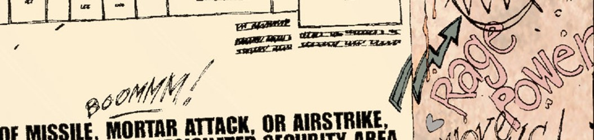

üëã Bienvenue sur mon site d'apprentissage du turc, Ce site se divise en 3 grandes
catégories :
1️⃣ De la grammaire basée sur les livres "Istanbul Yabancılar İçin Türkçe Ders
Kitabı".
Ces livres ont été préparés avec la connaissance, l’expérience et les antécédents
des professeurs qui enseignent le Turc depuis 1933 et qui travaillent à
l’Université d’Istanbul. Les livres ont été organisés selon les critères des
niveaux de Langues Européennes reconnues (du A1 au C2). J'ai ajouté des
explications concernant la grammaire afin que la compréhension soit plus fluide.

2️⃣ Du vocabulaire (dans les sections "cümleler") basé sur des phrases aléatoires
du A1 au C1
La section dédiée aux phrases en turc sur le site offrira une expérience
interactive d'apprentissage. Les utilisateurs pourront parcourir une sélection de
phrases courantes en turc. En cliquant sur chaque phrase, celle-ci sera prononcée
à haute voix, permettant ainsi aux apprenants d'améliorer leur compréhension
auditive et leur prononciation. Cette approche immersive facilitera l'assimilation
du vocabulaire et l'amélioration de la diction, offrant ainsi une méthode pratique
et efficace pour apprendre la langue.

3️⃣ Une histoire, celle de DMZ en bande déssinée avec la lecture des images au clic
et du vocabulaire traduit
Résumé : Embourbé dans des guerres à travers le monde qui mobilisent son armée et
sa force nationale, le gouvernement américain a commis l'erreur fatale de négliger
la menace réelle que constituait les milices anti-gouvernementales à l'intérieur
des Etats-Unis. Comme un géant endormi, l'Amérique moyenne se soulève et, par la
violence, se fraie un chemin d'un bout à l'autre du pays, déclenchant une seconde
guerre civile américaine qui s'arrête sur la ligne de front à Manhattan. Ou dans
la DMZ, sigle désignant la zone démilitarisée. Matty roth, un photographe
stagiaire un peu naïf, accompagne un correspondant de guerre endurci au coeur de
la DMZ. Mais la situation tourne à la catastrophe, et Matty se retrouve seul et
perdu dans un monde qu'il n'avait vu alors qu'à la télévision. Il doit maintenant
apprendre à survivre dans cette zone de guerre...

⚠️ Pour que le site fonctionne , il est nécessaire de télécharger un "TTS" ou
"synthèse vocale" pour entendre les phrases en turc. En allant dans vos parametres
(ordinateur, tablette ou smartphone) de données vocales ou synthèse vocale. Vous
pouvez en trouver un sur le Galaxy Store, Play Store ou l'App Store. Ajouter la
langue turque, sinon la lecture se fera dans la langue par défaut de votre
appareil.

Mes réseaux sociaux :